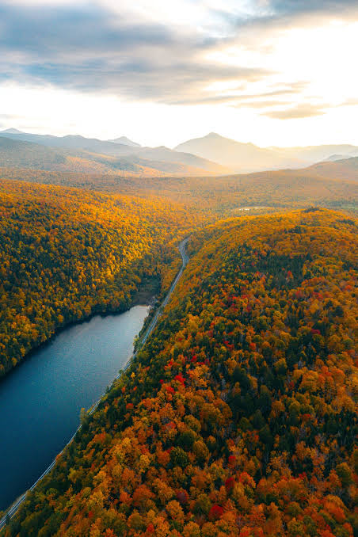

Beginner Backpacking in the Adirondacks
Your complete starting guide to exploring the wilderness of Upstate New York safely and responsibly.

What is Backpacking?
Backpacking combines hiking with overnight wilderness camping. Unlike day hiking, where you return home or to a vehicle at night, backpacking requires carrying everything you need to survive on your back. This includes your shelter, food, water, and sleeping gear.
The 6-million-acre Adirondack Park in Upstate New York offers over 2,000 miles of marked trails, making it one of the most popular destinations in the Eastern United States for first-time and experienced backpackers.
The Essential Backpacking Gear Checklist
When heading into the Adirondack backcountry, having the right gear is critical for comfort and safety. Here are the core essentials every beginner needs:
The Big Three
- Backpack: A properly fitted 45L to 65L internal-frame pack with a hip belt.
- Shelter: A lightweight 3-season tent, tarp, or hammock system with a rainfly.
- Sleep System: A sleeping bag rated for expected night temperatures and an insulated sleeping pad.
Clothing & Footwear
- Sturdy Footwear: Well broken-in hiking boots or trail runners with high traction, preferably a Vibram sole.
- Moisture-Wicking Layers: Synthetic or merino wool base layers (avoid cotton, which retains moisture and cold).
- Insulation & Rain Protection: A fleece or down jacket, plus a waterproof rain jacket.
Kitchen & Water
- Water Filtration: A squeeze filter, gravity filter, or chemical purification tablets.
- Camp Stove & Fuel: A small canister stove, lightweight pot, and eating utensil. A titanium spork is a great option here.
- Food & Storage: Lightweight meals, snacks, and an approved bear-resistant canister.
Rules, Regulations & Wilderness Safety
Leave No Trace Principles
Always carry out what you carry in. Dispose of waste properly, respect wildlife, keep campfires small (where permitted), and leave natural objects as you found them.
Adirondack Bear Canister Regulations
In the Eastern High Peaks Zone, state regulations require the use of approved, hard-sided bear canisters for all overnight food storage between April 1 and November 30. Hanging food bags is ineffective against smart local black bears.
Unpredictable Mountain Weather
Weather in the High Peaks can change rapidly. Even during summer months, temperatures can drop significantly overnight. Always pack extra warm layers and rain gear regardless of the weather forecast.
ADK Park Facts
- Park Size
- Approximately 6 Million Acres
- Public Land
- Approximately 2.6 Million Acres
- High Peaks
- 46 Mountains above 4,000 feet
- Trail Network
- Over 2,000 Miles of trails
Beginner Tip
Never start your first trip with a 10-mile trip. Choose a short 2 to 4 mile hike into an established campsite near water to test your gear and set up routines